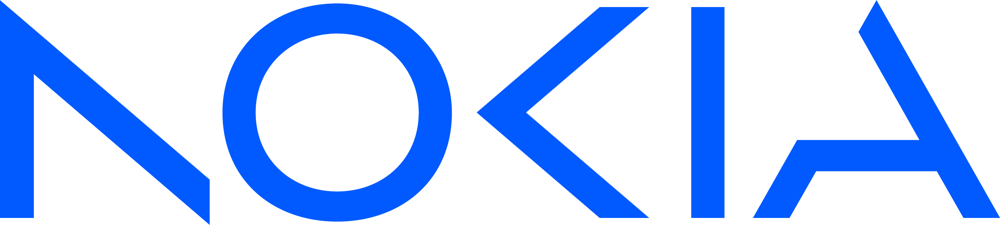

v22
v21
Nokia SR Linux makes extensive use of structured data models. Each application regardless if it's being provided by Nokia or written by a user against the NDK has a YANG model that defines its configuration and state.
With this design, the YANG data model is defined first, then the CLI, APIs, and show output formats are derived from it.
A central role that is given to YANG in SR Linux Network OS demands a convenient interface to browse, search through and process these data models.
To answer these demands this portal provides:
.yang files neatly stored in a nokia/srlinux-yang-models
repository for programmatic access and code generation
Created by Siva Sivakumar / Roman Dodin / srl-labs